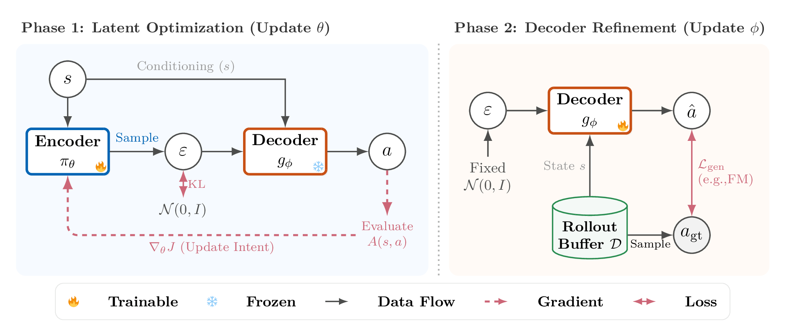
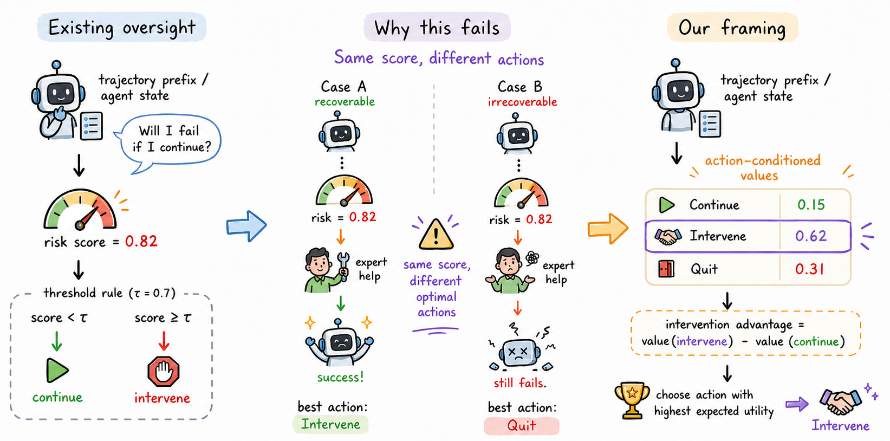

Researcher in AI and decision-making
Singapore
Chubin Zhang.
Learning through interaction.
My work centers on reinforcement learning, especially generative policies for online decision-making.
01 / About
About me
I am Chubin Zhang (张楚彬), currently a Research Assistant in Prof. Bo An's group at Nanyang Technological University. My research has focused on reinforcement learning, particularly online learning with expressive generative policies.
I am also interested in agents, embodied learning, and generative models, and am exploring where these connections lead.
For research conversations, reach me at z1175085991@gmail.com.
02 / News
Recent updates
Calibration Is Not Control and Denoising Time Matters were accepted to NeurIPS 2026 as posters.
Time-Annealed Perturbation Sampling was accepted to the ICML 2026 SPIGM workshop.
GoRL and Adversarial Dual On-Policy Distillation were accepted to ICML 2026.
Decoupling Tilting from Transport was accepted to the ICLR 2026 ReALM-GEN workshop.
LexChain was accepted to AAAI 2026.
03 / Research
Research
Generative policies for online reinforcement learning.

NeurIPS 2026
Calibration Is Not Control
Knowing that an agent might fail does not tell us whether intervening will help. We study intervention advantage through action-conditioned decisions and counterfactual branching from the same trajectory prefix.
Preprint
arXiv version uses an earlier title
04 / Publications
Papers
Conference papers 2026
-
01
Generative Online Reinforcement Learning
ICML 2026
-
02
Adversarial Dual On-Policy Distillation from Expressive Teacher
ICML 2026
-
03
Calibration Is Not Control: Intervention Advantage for LLM-Agent Oversight
NeurIPS 2026 / Poster
-
04
LexChain: Modeling Legal Reasoning Chains for Chinese Tort Case Analysis
AAAI 2026
-
05
Denoising Time Matters: Diverse Generation in Diffusion Language Models
NeurIPS 2026 / Poster
05 / Background
Where I have worked
My research background includes online reinforcement learning, generative modeling, and language-model research. I received my B.Eng. in Internet of Things Engineering from Beijing University of Posts and Telecommunications.
Browse publications
2026 - present
Nanyang Technological University
Research Assistant in Prof. Bo An's group / Singapore
2025 - 2026
A*STAR Centre for Frontier AI Research
Research Intern with Prof. Ivor Tsang / Singapore
2024 - 2025
Tsinghua University, THUNLP
Research Intern with Prof. Zhiyuan Liu / Beijing
06 / Contact
Let's talk research.
For research conversations, collaborations, or opportunities, reach me by email.